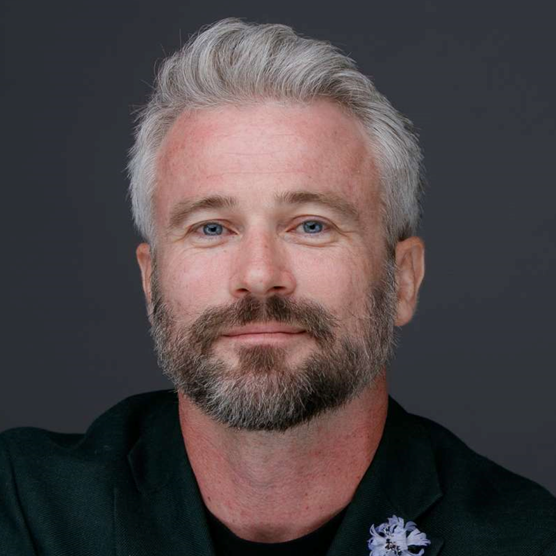

About the Foundation
The Science and Freedom for Everyone Foundation is a non-partisan educational and scientific organization. Through the SAFE Research Institute, the Foundation reviews and synthesizes existing peer-reviewed research on public health and biomedical topics, then publishes plain-language reports, summaries, and white papers that are freely available to the general public.
Why We Exist
The gap between scientific research and public understanding continues to widen. The Science and Freedom for Everyone Foundation was established to close that gap by making complex scientific information accessible to anyone who wants to understand it. The Foundation's core audience is the general public. Educators, journalists, students, community organizations, and public officials are welcome to use the same materials, on the same terms, free of charge.
Evidence-Based Analysis
Reports, summaries, and white papers synthesizing peer-reviewed research on public health and biomedical topics.
Public Education
Educational summaries, webinars, and public presentations that help people interpret scientific information they encounter in everyday life.
Briefings on Written Request
Research-based educational briefings provided to community organizations and public officials on request.
Board of Directors
The Foundation is governed by a three-person Board of Directors. Each officer holds defined fiduciary responsibilities under California Nonprofit Public Benefit Corporation Law and the Foundation's bylaws.

Dr. Gregory M. Newkirk
Dr. Gregory M. Newkirk is a molecular biologist, science communicator, and the founder of Science and Freedom for Everyone (SAFE). He earned his Ph.D. studying the frontiers of molecular biology, with research spanning CRISPR/Cas9 gene editing, nanotechnology, and genomics, and his work has appeared in leading journals including Nature Nanotechnology and ACS Nano. He is also a named inventor on a granted U.S. patent for a nanoparticle-based method of delivering genetic material into plant cells. After years at the bench in both academic and industry laboratories, Dr. Newkirk turned his attention to a growing challenge of our time: the erosion of public trust in science. Drawing on his credentials as a working scientist, he now engages directly with skeptics, deniers, and the simply curious in live, open debates, meeting people where they are and modeling how evidence and honest inquiry actually work. He founded SAFE to carry that mission further, educating the public and policymakers about how science-based policy can improve quality of life and building a community dedicated to defending scientific integrity, protecting the freedom to ask questions, and ensuring that accurate, trustworthy science remains accessible to everyone.
Oversees the Foundation's strategic direction, presides at meetings of the Board, and serves as the principal external representative of the Foundation.
Kristen McCracken
Kristen McCracken serves as Chief Financial Officer and a member of the Board of Directors of Science and Freedom for Everyone. In this role, she oversees the organization's financial management, including budgeting, financial reporting, and the development of policies that support transparency, accountability, and long-term sustainability. Kristen has a strong background in nonprofit operations and organizational leadership. She holds a certification in Nonprofit Management from Southern Methodist University, where she gained formal training in governance, financial stewardship, and strategic planning for mission-driven organizations. As CFO, Kristen works closely with fellow board members to ensure responsible financial oversight and alignment between the organization's resources and its mission. Her approach emphasizes sound fiscal practices, ethical governance, and building a stable foundation for growth and impact. In addition to her role with Science and Freedom for Everyone, Kristen also serves as a director of another nonprofit organization, where she contributes to organizational governance, strategic planning, and mission-focused leadership. She is committed to strengthening nonprofit organizations through sound financial stewardship and effective governance.
Oversees the Foundation's financial condition, maintains books and records of account, prepares the annual budget, and oversees timely federal and state tax filings.
Michele De Socio
Michele De Socio has over 20 years of experience in nonprofit financial leadership, having served as Chief Financial Officer of a private nonprofit social service agency and federally qualified health center, where she was responsible for financial oversight and regulatory compliance.
Now retired, she serves as Secretary of the Board of the Science and Freedom for Everyone Foundation (SAFE), contributing expertise in governance and organizational oversight to support the Foundation's mission of advancing public education and promoting scientific integrity. She has also served on the boards of other nonprofit organizations and volunteers her time assisting emerging nonprofit organizations with startup guidance, compliance, and regulatory requirements.
Maintains the Foundation's corporate records, records minutes of Board meetings, and oversees the Foundation's compliance calendar and conflict-of-interest disclosures.
Scientific Advisory Board
The Scientific Advisory Board is a standing advisory body of volunteer experts in microbiology, clinical medicine, data science, public health, and related fields. It exercises no governance authority. Its role is to review draft publications for methodological soundness, flag and manage author or reviewer conflicts of interest, and recommend publication standards to the Board. Members serve uncompensated. Recruitment is ongoing, and members will be announced here as they are confirmed.
Our Commitment
The Science and Freedom for Everyone Foundation operates as a non-partisan educational and scientific organization. The Foundation does not support, oppose, endorse, or contribute to any candidate for public office and does not engage in any form of electioneering.
The Foundation has elected the expenditure test under Section 501(h) of the Internal Revenue Code for any educational work that touches on legislative subjects. Substantially all Foundation work is nonpartisan educational analysis or technical assistance provided in response to written requests. The Foundation does not advocate for the adoption, modification, or rejection of any specific legislation, regulation, or policy proposal.
All Foundation work products are released to the public free of charge under open licenses, with the license chosen to fit each type of material: model policy documents are dedicated to the public domain under Creative Commons CC0 1.0; and research reports, white papers, and educational materials are licensed under Creative Commons Attribution 4.0 (CC BY 4.0). The Foundation's names and logos are not covered by these licenses and remain reserved.